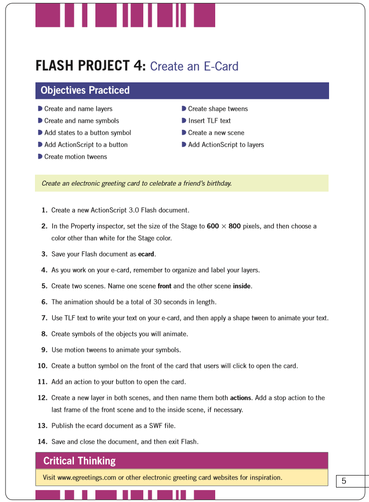
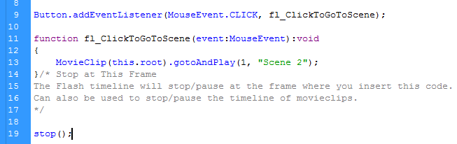

Arbor Day E-Card
Created: February 17, 2015
This interactive, electronic Arbor Day card was created in the course Web Design 2 following the guide pictured on the right. Similar to other electronic, and print cards, after an initial opening scene the reader is prompted to essentially "open" the card. This is done by clicking on the text which continues the reader to the end of the animation.
Flash techniques used include:
- Deco tool
- Used to simulate the water pouring from both the can and the cloud by using a single image of a water droplet, repeatedly animated
- Motion tweening
- Used for the moving of the plant, watering can, cloud, etc.
- Multiple scenes
- One scene being the outside of the card and the other the inside, this allows for the "opening" of the card
- Shape tweening
- The initial plant growth from the pot uses this method
ActionScript is used in this project to activate the button as well as stop the animation from looping.
The code states that when the event of a mouse click occurs on the button that was created in the scene, the animation should skip to scene two. After it has finished playing, the animation then terminates and therefore does not loop.